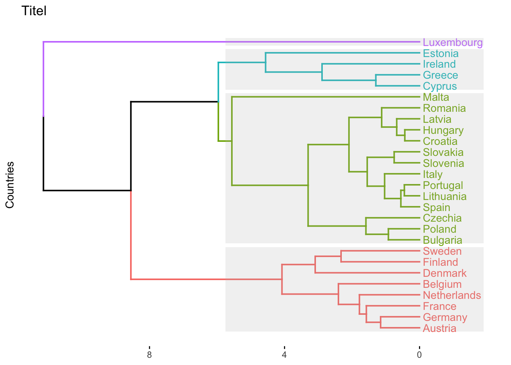
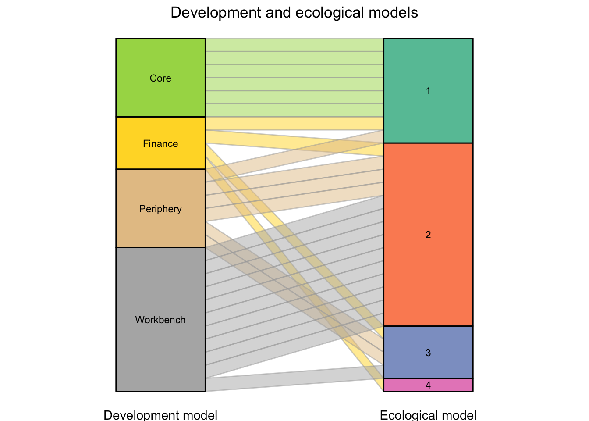

| Algorithm | Coefficient |
|---|---|
| average | 0.7835744 |
| single | 0.7690382 |
| complete | 0.8072610 |
| ward | 0.8249842 |
Clustering
1 Open issues
- What about the source/greeness of energy production? These are also in the energy balance data set
- Suggestion: For total domestic energy supply export of energy only use energy that has been produced by green sources?
- Consideration of employment dimension
- Consideration of green products in export basket
- Descriptives for the clusters
2 Data setup
We focus on the time between 2014 and 2018 and consider the following variables:
| Dimension | Rationale | Variable | Source |
|---|---|---|---|
| Externalization of ecological stressors | Countries that externalize more have a less sustainable more of provisioning. | Net GWP imports per capita | EXIOBASE, own calculation. |
| Total domestic GHG emissions | Countries the emit a lot GHG need to change more drastically. | GWP emissions per capita | EXIOBASE, own calculation. |
| Economic strength | Countries with more economic strength can more easily support the transition and counter challenges. | Domestic value added | EXIOBASE, own calculation. |
| Domestic energy supply | Countries with high domestic supply IF GREEN? are more independent and more flexible. | Total primary energy production per capita | Eurostat |
| Domestic energy demand | Countries with high domestic demand are less flexible and more dependent. | Total energy consumption per capita | Eurostat |
| Export of energy | Countries that export more energy IF GREEN? are more likely to benefit. | Total energy exports per capita | Eurostat |
| Innovation in green technologies | Countries with technological capabilities in green areas are likely to benefit more. | Green patents per million people (EPO classification) | PATSTAT |
| Dependence on brown employment | Countries that depend a lot on brown jobs face bigger challenge of transition. | TBD | |
| Production of green products | Countries that produce many green products are likely to benefit more. | TBD | |
3 Conduct the clustering
3.1 Choice of the clustering algorithm
Data preparation:
There are four different agglomerative cluster algorithm. Usually one chooses the one that yields the highest clustering coefficient:
Thus, in our case we should use the WARD algorithm.
We might also assess the quality by comparing the cophenetic distance of the clustered data and the original euclidean distances:
[1] 0.7238995This is a satisfactory number.
What remains open is the right number of clusters, but this is also a question of interpretation.
3.2 Result of the clustering
Here is the overall result of the clustering assuming 4 clusters.

# A tibble: 27 × 2
country `Ecological model`
<chr> <chr>
1 Austria 1
2 Belgium 1
3 Bulgaria 2
4 Cyprus 3
5 Czechia 2
6 Germany 1
7 Denmark 1
8 Estonia 3
9 Spain 2
10 Finland 1
# ℹ 17 more rows| Ecological model 1 | Ecological model 2 | Ecological model 3 | Ecological model 4 |
|---|---|---|---|
| Austria | Bulgaria | Cyprus | Luxembourg |
| Belgium | Czechia | Estonia | |
| Germany | Spain | Greece | |
| Denmark | Croatia | Ireland | |
| Finland | Hungary | ||
| France | Italy | ||
| Netherlands | Lithuania | ||
| Sweden | Latvia | ||
| Malta | |||
| Poland | |||
| Portugal | |||
| Romania | |||
| Slovenia | |||
| Slovakia |
Here I visualize the relationship to the development models classification:
